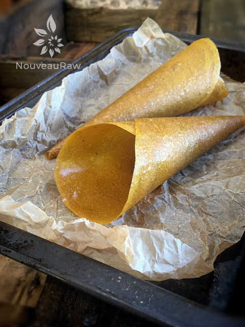
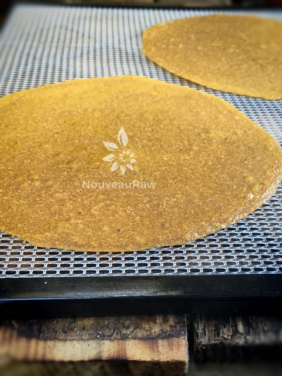
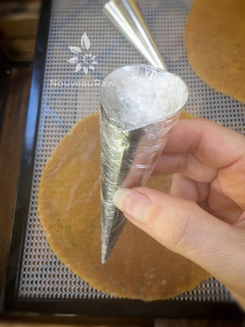
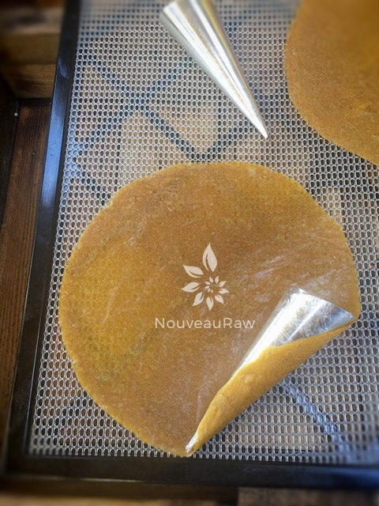
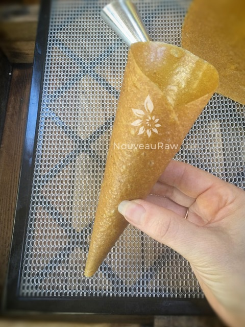
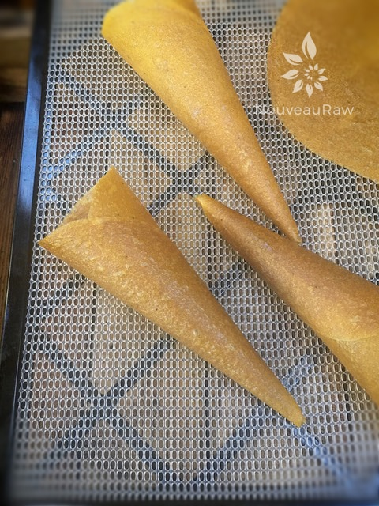

Banana Mango Cones
~ raw, vegan, gluten-free, nut-free ~
These Banana Mango cones are just a delight to serve to guests, especially young ones. This particular cone shouldn’t be used to serve moist foods in because the moisture will weaken the cone (rehydrate it basically).
For serving suggestions, fill the wrap with; dried fruits and nuts, dry granola… foods that you would shake out into your other hand and eat, thus leaving the cone (leather) to eat once the inner contents are gone.
You could even make a frozen treat by filling them with soft serve banana ice cream, then refreeze. A great treat for a warm day.
Selecting a Mango
You know that saying, “You can’t judge a book by its cover”… well, the same is true when it comes to selecting the perfect mango for this recipe. Don’t focus on color. It is not the best indicator of ripeness. Squeeze the mango gently. A ripe mango will give slightly. You can even go as far as giving it the good ole’ sniff test. Ripe mangos will sometimes have a fruity aroma at their stem ends.
I hope you enjoy this simple recipe. Blessings, amie sue
Ingredients:
yields 3 1/2 cups of batter (6 round wraps)
- 2 mangos, skinned and stone removed
- 1 large, ripe banana
- 1 Tbsp raw honey or another sweetener
Preparation:
- Select RIPE or slightly overripe bananas and mangoes that have reached a peak in color, texture, and flavor.
- Prepare the mangoes; remove skin and pit.
- Puree the fruit and honey, in the blender or food processor until smooth. Taste and sweeten more if needed. Keep in mind that flavors will intensify as they dehydrate. When adding a sweetener do so a little at a time, and reblend, tasting until it is at the desired taste. It is best to use a liquid type sweetener. Don’t use granulated sugar because it tends to change the texture.

Spread the fruit puree on teflex sheets that come with your dehydrator. Pour the puree into 6 equal portions on the teflex sheet. Spread to a 6-8″ diameter circle with an even depth of 1/8 to 1/4 inch. If you don’t have teflex sheets for the trays, you can line your trays with plastic wrap or parchment paper. Do not use wax paper or aluminum foil.
- Lightly coat the food dehydrator plastic sheets or wrap with a cooking spray, I use coconut oil that comes in a spray.
- When spreading the puree on the liner, allow about an inch of space between the mixture and the other wraps.
- Dehydrate the fruit leather at 145 degrees (F) for 1 hour, reduce temp to 115 degrees (F) and continue drying for about 8 (+/-) hours. The finished consistency should be pliable and easy to roll.
- Check for dark spots on top of the fruit leather. If dark spots can be seen it is a sign that the fruit leather is not completely dry.
- Press down on the fruit leather with a finger. If no indentation is visible or if it is no longer tacky to the touch, the fruit leather is dry and can be removed from the dehydrator.
- Peel the leather from the dehydrator trays or parchment paper. If it peels away easily and holds its shape after peeling, it is dry. If it is still sticking or loses its shape after peeling, it needs further drying.
- Under-dried fruit leather will not keep; it will mold. Over-dried fruit leather will become hard and crack, although it will still be edible and will keep for a long time.
- Create the cone. (Picture below)
- I used Creme Horn Cones to mold my cone shapes. Lightly coat them with coconut oil. This will help in removing the mold when they are done.
- Wrap the cone mold with plastic wrap for the ease of removal later.
- Start wrapping the leather around the cone mold as seen in the photos below. When the cone is shaped, use a dampened finger to seal the edge.
- Dehydrate at 115 degrees for about 4-6 hours, basically until they are no longer sticky. They won’t dry hard.
- Remove the mold, fill, and serve.
Culinary Explanations:
- Why do I start the dehydrator at 145 degrees (F)? Click (here) to learn the reason behind this.
- When working with fresh ingredients, it is important to taste test as you build a recipe. Learn why (here).
- Don’t own a dehydrator? Learn how to use your oven (here). I do however truly believe that it is a worthwhile investment. Click (here) to learn what I use.
The completed leathers. These can be eaten as is or you can move onto making cones.





© AmieSue.com